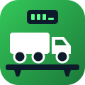
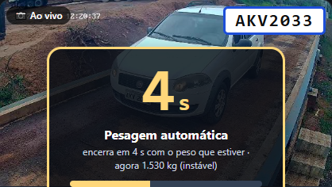
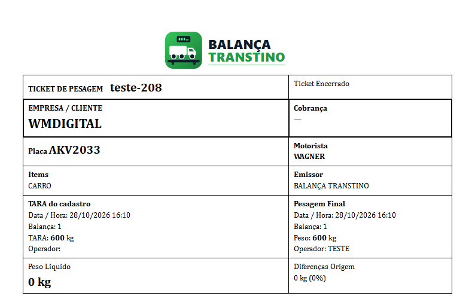
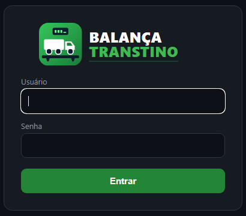

Faça na ordem, todo dia ao ligar o computador da balança. Leva 2 minutos.
O indicador da balança (WT27R) fica no cabo da COM3 e o Windows lê o peso sozinho. A câmera fica no IP 192.168.100.29 e a impressora é a EPSON L395, que precisa estar com papel.

Abre uma janela preta, que é o sistema rodando. Não feche essa janela: pode minimizar. Também abre a câmera e a conexão com a internet.
O endereço é http://127.0.0.1:8090. Se a tela estiver estranha, aperte Ctrl+F5. Confira no canto direito, em cima, se a bolinha Balança está verde.
A extensão "Balança Transtino — Avisos no WhatsApp" manda os avisos e os tickets por essa aba. Ela pode ficar em segundo plano, mas não pode ser fechada.
chrome://extensions, clique em ↻ e depois aperte F5 na aba do WhatsApp.
Depois de atualizar o sistema, feche a janela preta e abra o atalho de novo, com a balança vazia.| O quê | Onde |
|---|---|
| Tela de pesagem (neste computador) | http://127.0.0.1:8090 |
| Acesso pela internet | https://balancatranstino.wcmdigital.com.br (usuário e senha) |
| Pasta do sistema | Área de Trabalho\testes-main\balanca_nova |
| Extensão do WhatsApp | balanca_nova\whatsapp_extensao (instalada no Chrome em chrome://extensions) |
| Backups automáticos do banco | C:\Backups (a cada 6 horas) |
| Fotos da câmera dos tickets | balanca_nova\fotos |
Tudo é automático. O operador só acompanha e entra em ação se aparecer um aviso.


Só vai para quem tem telefone com DDD no cadastro. Para testar sem gravar pesagem: Configurações → Aviso no WhatsApp → Enviar ticket de teste.
De qualquer lugar, pelo celular ou pelo computador: https://balancatranstino.wcmdigital.com.br

| O que acontece | O que fazer |
|---|---|
| A tela de pesagem não abre | Abra o atalho Pesagem Transtino e confira se a janela preta está aberta. |
| A bolinha Balança está vermelha ou não aparece peso | Confira se o indicador está ligado e o cabo na COM3. Reinicie o computador se continuar. |
| O WhatsApp não mandou o aviso ou o ticket | Veja se a aba do WhatsApp Web está aberta no perfil Balança Transtino e confira Configurações → Aviso no WhatsApp e o Log de falhas. O cadastro precisa ter telefone com DDD. |
| O ticket não imprimiu | Ligue a impressora e ponha papel. Depois clique em "Imprimir ticket Nº …" na tela. |
| O link mostra "sem conexão" | O computador da balança está desligado, sem internet ou com o atalho fechado. |